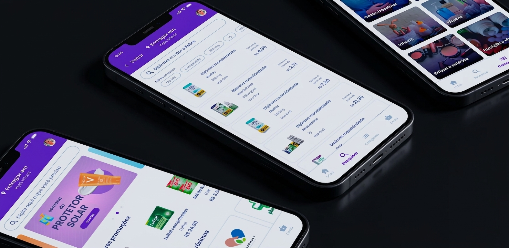
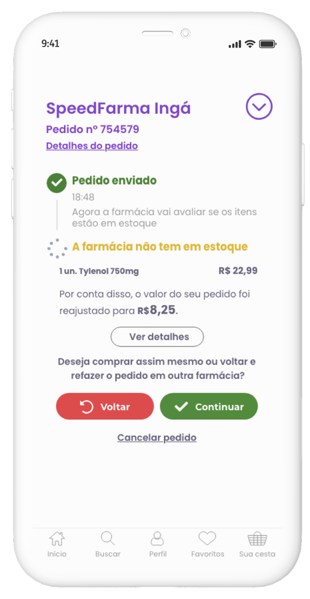
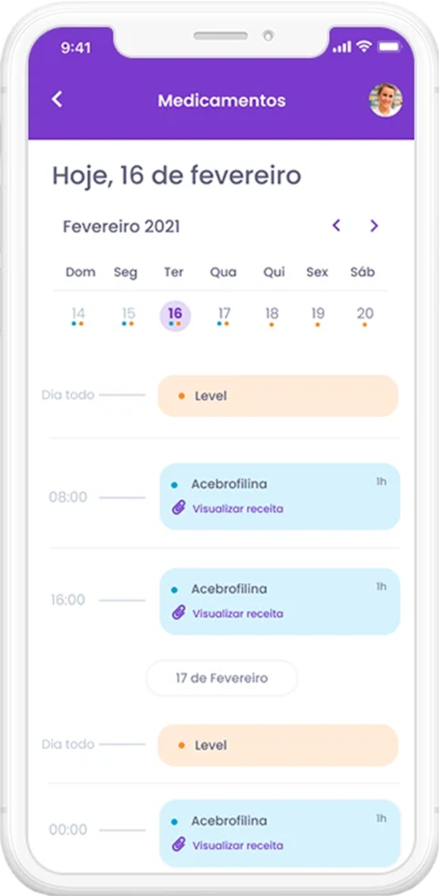
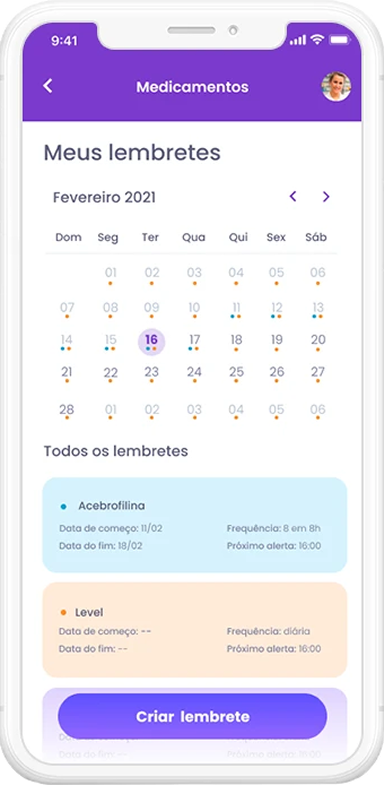

Case · Product Design · Marketplace de farmácias, app + backoffice
AcheiFarmácias
Como construí, sozinha, do zero, uma plataforma de compra e entrega de produtos de farmácia: um app para o usuário final encontrar, comparar e receber produtos, e um backoffice para as farmácias parceiras gerenciarem pedidos.

Meu papel
Única product designer do projeto, responsável de ponta a ponta, da descoberta ao lançamento.
- Canais
- App mobile para o usuário final (Flutter) e backoffice desktop de gestão de pedidos para as farmácias parceiras.
- Time envolvido
- Time enxuto de 10 pessoas. Formava dupla de produto com o PO, reportando diretamente ao CEO, e colaborava de perto com os 3 desenvolvedores e o tech lead para viabilizar as soluções desenhadas.
Introdução ao projeto
O objetivo era construir, do zero, uma plataforma de compra e entrega de produtos de farmácia: um app para o usuário final encontrar, comparar e receber produtos, e um backoffice para as farmácias parceiras gerenciarem pedidos.
Do lado do usuário, a dor era o deslocamento físico para comprar produtos simples, a dificuldade de comparar preço entre farmácias próximas, e a falta de opção de compra remota para itens mais sensíveis. Do lado do negócio, a dor era a baixa presença digital das farmácias independentes, que respondiam por 65% do mercado brasileiro de farmácias (dado IQVIA), num setor movimentando R$124 bilhões ao ano, mas perdendo competitividade frente às grandes redes com operação digital própria.
O problema existia porque o setor era, e em boa parte ainda é, fragmentado: muitos pequenos players, pouca digitalização, e nenhuma solução unificando comparação de preço e entrega numa experiência simples. A ideia nasceu de um pitch validado no programa da investidora Camila Farani, resumida internamente como "o iFood de farmácias".
Pesquisa
- Desk research: dados de mercado do IQVIA (R$124 bi de mercado total, 65% de farmácias independentes), benchmark de concorrentes e soluções análogas.
- Ideação inicial: dinâmicas de Crazy 8s e matriz CSD (certezas, suposições, dúvidas) para mapear o que já sabíamos e o que precisava de validação.
- Pesquisa quantitativa: survey em parceria com CEFET Jr e ICTQ.
- Pesquisa qualitativa: 14 entrevistas contextuais, com perfil etário real dos entrevistados.
- Personas: 4 personas construídas a partir da pesquisa (empresária, pai, vó, psicóloga), sendo a persona "vó" a âncora principal para os princípios de acessibilidade do produto.
- Princípios de design: usabilidade, acessibilidade e UX writing, derivados diretamente da pesquisa com usuários.
faturamento anual do mercado farmacêutico
das farmácias hoje são independentes
do faturamento total do mercado
*Dados IQVIA, 2019.
realizam pedidos por telefone
favorabilidade em existir um app para resolver o problema
usariam o app
*Pesquisa com a CEFET, 167 formulários respondidos.
Objetivos do negócio vs. objetivos do usuário
A pesquisa inicial apontava público-alvo 35+ como foco principal, mas a operação real mostrou um público bem mais amplo, incluindo faixas etárias mais jovens comprando não só medicamentos, mas itens de outras categorias que não eram a aposta original do produto.
A hipótese sobre o comportamento de compra também não se confirmou: esperávamos que "dor" fosse a categoria líder em pedidos, mas o item mais vendido no período foi teste de gravidez, provavelmente porque comprar esse produto numa farmácia física pode gerar constrangimento, algo que o digital resolve por natureza.
Do lado do negócio, a promessa de transparência de preço esbarrava numa dinâmica que não estava totalmente sob nosso controle: cada farmácia parceira definia sua própria margem de desconto, criando uma disputa silenciosa entre parceiros por quem apareceria com o melhor preço primeiro.
Soluções encontradas
a) Processo de solução
Card sorting e arquitetura de informação para organizar categorias de produto. User flows principais desenhados: cadastro, compra, favoritos e cancelamento de pedido. Sketches, wireframes e styleguide completo (cores, tipografia, botões, forms) evoluindo até as telas finais de UI.

b) Decisões com racional exposto
Box 1 · Risco de descolamento entre pesquisa e público real
Contexto
A pesquisa de base do produto foi conduzida no bairro da Tijuca, mas o MVP rodaria de fato em Niterói.
O que foi decidido
Sinalizei esse risco ao time antes do go-live, antecipando a possibilidade de o público real ser diferente do público pesquisado.
Por quê
Identificar esse tipo de descolamento cedo evita que o time só perceba o problema depois do lançamento, quando é mais caro corrigir.
Box 2 · Digitalizar a venda de remédios controlados
Contexto
Em 2019, esse fluxo praticamente não existia digitalizado no mercado brasileiro, só venda presencial.
O que foi decidido
Desenhei e ajudei a implementar o fluxo completo, envio da receita pelo app, validação pela própria farmácia, e retirada da receita física pelo motoboy no momento da entrega.
Por quê
Era uma categoria de alta demanda que nenhum concorrente direto oferecia de forma digital, e resolver isso com segurança (validação humana da farmácia mantida) virava diferencial real.
Box 3 · Produto indisponível em estoque
Contexto
Nem sempre o produto pedido estava disponível na farmácia no momento da compra.
O que foi decidido
Desenhei a solução de sugestão de produto similar, mostrando a diferença de preço entre o item original e o substituto.
Por quê
Evitava perder a venda inteira por falta de um único item, e dava ao usuário uma alternativa clara em vez de um erro seco.

Box 4 · Interface para o usuário mais vulnerável (persona "vó")
Contexto
Parte relevante do público tinha baixa familiaridade digital e precisava de uma experiência sem ambiguidade.
O que foi decidido
Tipografia maior, hierarquia visual simplificada com um único caminho óbvio por tela, contraste mais alto nos elementos de ação, e UX writing direto, sem jargão técnico ou nomes de categoria genéricos.
Por quê
Projetar para o extremo mais exigente do público elevava o padrão de clareza para todos os outros perfis também.

Box 5 · Cuidado contínuo com o usuário
Contexto
Parte do público de 35+ fazia uso contínuo de medicação, e pesquisa e feedback de usuário indicaram risco real de esquecimento de dose e de renovação de receita, além do risco comercial de perder o usuário de vista entre uma compra e outra.
O que foi decidido
Criei a funcionalidade "Meus lembretes", permitindo cadastrar cada medicamento com horário de alerta, frequência (diária ou semanal), data de início e fim do tratamento, e acesso rápido à receita anexada, com visão de calendário e visão do dia.
Por quê
A decisão nasceu dupla, desde o início. Cuidar do usuário de forma contínua fazia parte da missão do produto, e trazer o usuário de volta ao app com frequência tinha valor real de negócio. Não tratei como concessão de uma prioridade sobre a outra, as duas coincidiam na mesma solução.


Colaboração técnica
Contexto
O PO defendia a ideia de um assistente virtual guiando o usuário passo a passo em cada etapa da compra, no formato de wizard.
O que foi decidido
Alinhado com um dos desenvolvedores, construí o argumento de que a assistente deveria ajudar sem ser invasiva, evitando gerar incômodo em vez de facilitar. Incluímos um botão de "não mostrar mais", um padrão já familiar para usuários Android, sistema operacional predominante entre os usuários cadastrados no app.
Por quê
A proximidade com o time de desenvolvimento permitiu unir argumento técnico e de UX para reverter uma decisão de produto que, sem esse contraponto, teria virado uma experiência mais invasiva do que útil.
Resultados
O MVP foi lançado com 6 farmácias parceiras ativas. Conduzi testes de usabilidade com 5 usuários reais, tanto na fase pré-lançamento (validando o job to be done principal) quanto pós-lançamento (aplicando a metodologia SUS para orientar o roadmap seguinte). Implementamos uma avaliação de satisfação (CSAT) por estrelas, que alcançou média de 4,4 de 5. O programa de indicação (member get member) teve peso relevante na aquisição: aproximadamente 30% dos novos cadastros no período vieram por essa via. Acompanhei os primeiros 4 meses de operação real antes de sair da empresa.
Aprendizados / Fechamento
Ser a única designer do produto me tirou a rede de segurança de ter outra pessoa de design por perto para validar o que era um bom padrão visual. Isso me obrigou a pesquisar muito mais referência de mercado, de e-commerce, de outros apps, de design em geral, porque eu era a própria referência visual do time. Isso elevou o nível de exigência que carrego até hoje com as minhas entregas, e moldou boa parte de como sou detalhista com UI.
A avaliação por estrelas alcançou uma boa média (4,4 de 5), mas não tínhamos um campo de texto para capturar feedback qualitativo, então sabíamos que a experiência era bem avaliada sem entender exatamente o porquê. Além disso, boa parte dos usuários saía do app sem avaliar, comportamento esperado depois de já ter recebido o produto em casa. Isso me ensinou a diferença entre "coletar algum feedback" e "coletar o feedback certo": um número sozinho, sem contexto qualitativo, não é suficiente pra priorizar o que melhorar primeiro.
"Aprendi que um bom padrão visual não vem da opinião de quem está no mesmo time, vem de pesquisar referência real de mercado. Isso refinou meu olhar para craft, uma exigência que carrego comigo até hoje."